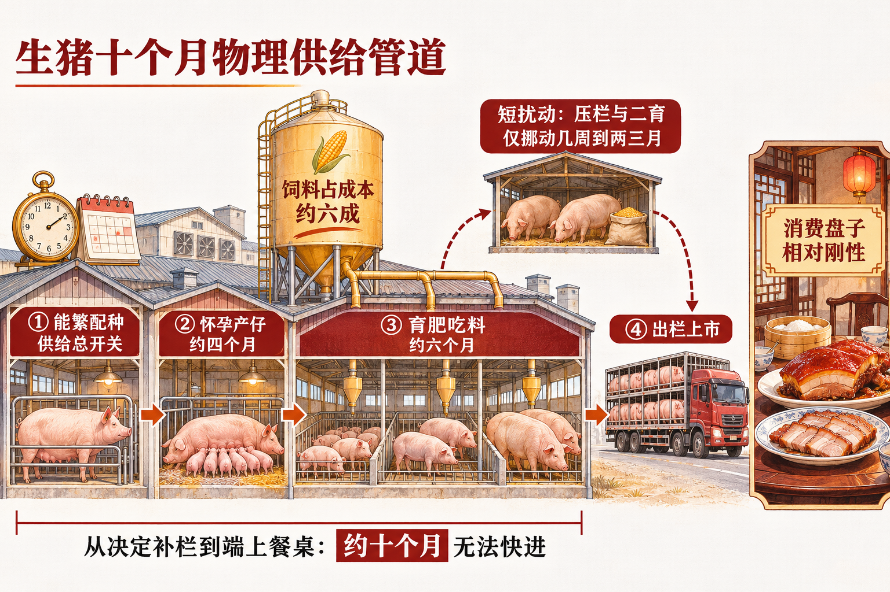
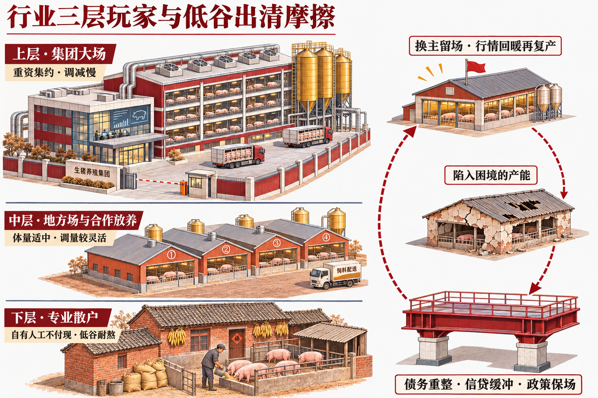
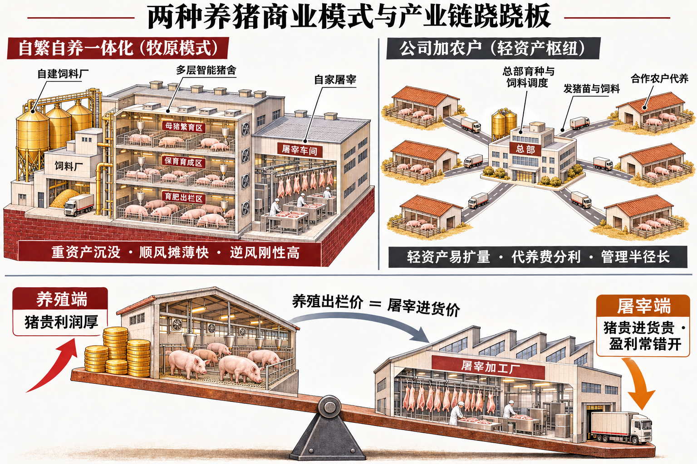

这门生意怎么运作：一头猪如何从母猪走到餐桌
商品属性、十个月物理管道与驱动猪周期的三个轮子
后面三页算财报、反算估值、定周期买卖，全都踩在同一块认知地板上：我们究竟把养猪当成一门什么样的生意来看？翻账本之前，先把行业运转的物理机器、牧原这台公司的赚钱机器，以及全篇研报依赖的七条底层认知全部摊开标清。
把商品猪还原成物理商品，三条硬约束锁死了行业脾气。第一，普通商品猪到了批发和屠宰环节高度同质，黑猪土猪体量极小，改不了主链按市场价竞价定价的规则。第二，活猪一天不卖就要多吃一天料、多占一天栏，宰后冻肉也要扛冷库与跌价损失，根本囤不住。第三，中国人吃猪肉的盘子已近平台，消费端波动很小，供给只要多出或少掉一小截，价格就会剧烈甩尾。
供给为什么不能跟着猪价随时踩刹车？因为一头猪从母猪配种到长成肥猪上餐桌，中间隔着一条无法快进的十个月物理管道。今天猪价大涨决定多留母猪，或者猪价大跌决定淘汰母猪，都改不了当下乃至未来大半年的肉量。

- 猪周期由三个转速不同的轮子叠在一起。最慢的主轮是能繁母猪头数，赚钱时大家一起扩过头、亏钱时一起淘过头，约十个月才兑现成供给。中间的轮子是效率乘数，母猪头数不变时，大疫病暴发或育种防疫进步也能大幅改写实际出栏量。最快的轮子是压栏与二次育肥，只制造几周到两三个月的短期波浪，带不走主周期。
- 主导轮在不同阶段会切换，看周期不能只盯母猪头数。2018 年非洲猪瘟暴发时，疫病导致的效率损失盖过了母猪存栏的慢变化，把猪价推得极陡；疫病收敛后，行业效率仍在缓慢爬坡。按全国生猪出栏除以上年能繁均值这一粗略代理看，2024 年至 2025 年效率从 16.5 头升至 17.8 头、提高约 8%，这意味着能繁下降一成，供给未必同比缩掉一成。
- 两条看行业最容易接反的时钟。第一，十个月管的是“今天有多少猪可卖”，不是拿十个月前的玉米豆粕价去算今天卖猪的成本——今天卖出的这批猪，饲料、动保与人工花在它近半年长肉的那段时间。第二，菜场或产区单周反弹只是短期现货价，拉不动全季或全年销售均价，更不等于行业已经越过含折旧与管理费用的完全成本。
谁在场内分肉：产业链分配、三层玩家与为什么低谷清不干净
规模分层与组织方式两刀切开，及低谷期三道真实的退出摩擦
先看整条猪肉产业链的钱怎么流。上游卖玉米、小麦和豆粕，饲料占养猪营业成本约六成，原料价格跟着大宗粮价走。中游养猪环节独自扛下全部周期大起大落，赚的是“市场猪价减去自身完全成本”的差价。下游屠宰厂买猪、杀猪、卖白条和分割肉，挣的是微薄加工费，且它的进货价正是养殖端的出栏价。
再把养殖场内所有玩家用两把刀切干净，以免张冠李戴。第一刀按体量与资本形态，分为集团大场、地方中小规模场（含合作放养）与专业散户三层。第二刀按生产组织方式，分为自繁自养与公司加农户两类。牧原和温氏分属不同组织方式，但同站在集团大场这一层，不能把两种模式混当成行业分层。
近年规模化推进得很快：全国年出栏 71,973 万头，按年出栏 500 头以上口径，2024 年规模化率已达 70.1%，前二十大企业合计份额从 2020 年的 14.5% 升至 2024 年的 30.6%。推动集中度上升的核心原因，不是猪场越大就天然越省钱，而是防疫设施、环保合规与资金门槛把退出后想重新建场的小玩家挡在了门外。
| 分类 | 资本与固定资产特征 | 扩栏与调量弹性 | 疫病与低价资金承压特征 |
|---|---|---|---|
| 集团大场 | 栏舍、种猪与环保设施重资产沉淀深，单头资本开支与固定折旧刚性强 | 产能计划与在建工程惯性大，低价期调减慢；上一轮陷入资金困境的部分集团经重整或预重整未清盘离场 | 疫病传染半径集中且管理跨度大；低价年面临亏损、短债滚续与续贷条件三重考验 |
| 地方场与合作放养 | 自有中小场或按合同自建栏舍并交保证金，固定沉淀中等 | 相对集团大场调量更灵活，但受地方稳产要求与代养合同批次约束 | 独立场直接扛猪价与疫病波动；合作放养户让渡部分猪价敞口但仍承担栏舍占资与成绩考核 |
| 专业散户 | 旧舍改造与家庭劳动占比高，账外人工折价大、显性固定折旧较轻 | 进退受现金流与疫病冲击牵引，延付家庭人工后的实际留存耐力尚未核实 | 抗单次疫病与合规改造成本能力较弱；机制推测低价期只要现金料钱未大亏便不易迅速离场，但实际留存额未知 |
| 自繁自养（组织模式） | 育种、饲料、繁育、育肥全链入表内固定资产，资本占用最高 | 顺周期扩产后折旧摊薄快，但产能一旦建成难以临时拆解或停转 | 工艺统一、穿透管理深，代价是低价期固定开支与有息负债利息全部留在自身资产负债表内 |
| 公司加农户（组织模式） | 企业端轻资产聚焦育种、饲料与购销，育肥栏舍资本沉淀分散给合作农户 | 通过增减合作户数量与投苗密度调量相对轻便，但依赖合作户留存与履约 | 企业端少扛部分固定折旧，但需向农户结算代养费并承担集中管控疫病与死淘的摩擦 |
纯文本结构对照表：前三行按行业规模与抗风险形态分层，后两行按生产组织方式拆开定位（模式取舍详见第三节）；两刀相互交叉，不把组织模式等同于规模层级。

直观上，规模化率过了七成，行业似乎该像工业制造一样快速出清。但现实里三道摩擦卡住了出口，让每次低谷去产能都拖得很慢：
- 第一道摩擦：散户和中小场有一层不付现的“家庭用工缓冲垫”。看下面 2024 年全国农产品成本收益资料汇编的五档调查成本：散养户把自家人工按机会成本算进去后，纸面总成本高达 17.39 元/公斤，看起来最先亏穿。但其中整整 4.20 元/公斤是不立刻掏现钱的自家人工折价，扣掉之后骤降至 13.20 元/公斤，反而低于小规模 13.87、中规模 14.25 与大规模 15.33 元/公斤。只要卖猪回款还能垫住饲料和仔猪现钱，散户往往宁可少算自己工钱、留在场里熬价；全行业经济口径保本价（16.05 元/公斤）与剔除家庭用工后的保本价（14.09 元/公斤）之间，天然隔着近两元缓冲带。
- 第二道摩擦：政策守住规模猪场保有量底线，金融端亦提供缓冲依据。农业农村部《生猪产能综合调控实施方案（2026年修订）》写明：「各地应保持规模猪场数量总体稳定，不得随意拆除。」 同一方案同时将能繁十万头以上大型集团纳入全国监测、年度生产备案与窗口指导；而 2021 年六部门文件也提出：「对符合授信条件但暂时经营困难的生猪养殖场（户）和屠宰加工企业，不得随意限贷、抽贷、断贷。」 规模场既不能被外部随意强拆，也不易因一刀切抽贷瞬间崩塌。
- 第三道摩擦：困境企业更常走重整换主，猪舍留在地里随时能复产。上一轮陷入债务危机的几家上市猪企走向各异，有的完成司法重整换主后出栏大幅回升（如正邦科技 2025 年出栏回升至 853.7 万头），有的重整后规模收缩（傲农生物 175.1 万头），也有仍在预重整与引入新投资人的（天邦食品 666.4 万头，三家口径均非纯商品猪）。共同点是，猪舍没有物理消失——产能只是换了旗帜或暂缓负荷，一旦猪价抬头就能迅速重新转起来。
| 分档 | 定义与样本 | 含家庭用工折价（元/公斤） | 剔除家庭用工（元/公斤） |
|---|---|---|---|
| 散养 | 年饲养一至三十头调查散户（口径线索，均重约 131.5 公斤） | 17.39 | 13.20 |
| 小规模 | 年饲养三十至一百头调查场户（口径线索，均重约 136.3 公斤） | 15.79 | 13.87 |
| 中规模 | 年饲养一百至一千头调查场户（口径线索，均重约 136.7 公斤） | 15.23 | 14.25 |
| 大规模 | 年饲养一千头以上调查场（不含上市集团全口径，均重约 129.7 公斤） | 15.42 | 15.33 |
| 规模合计 | 汇编中“小规模、中规模与大规模”三档汇总平均（均重约 134.2 公斤），非上市集团本身 | 15.48 | 14.47 |
固定的是 2024 年全国农产品成本收益资料汇编调查档与按本档每公斤出栏活重折算口径；变的是规模分档。剔除家庭用工仅扣除了不立即付现的自有人工折价，未扣除全部非付现项，不等于严格现金成本；官方大规模调查档也不是上市集团本身。
牧原的生意模式是什么：一台重资产一体化机器的强项与命门
自繁自养全链运作、与公司加农户的本质取舍、顺逆风机制与副业边界
把牧原放回上面的行业棋盘，它的生意一句话就能讲清：自己买粮配饲料、自己选育种猪、自己盖标准化猪舍、雇自有员工把猪从出生养到出栏，按市场竞价卖掉，其中三成多送进自家屠宰厂。2025 年牧原卖出商品猪 7,798.1 万头，占全国出栏 10.83%。猪价不由它定，成本由它自己管，整家公司的盈利几乎全部绑在活猪出栏量和每公斤成本差上。

- 全链重资产工业化，靠统一标准磨出管理效率。牧原在全国铺开上千座平铺与楼房猪舍，配备空气过滤、智能环控与自动饲喂，力求不同场线在猪舍、装备、流程和激励上走同一个模子。这种打法的核心收益，是把原本高度依赖老师傅经验的散养活儿变成工业流水线，把育种、饲料、成活率和料肉比各抠出一点点，累积到出栏端压低单位成本。
- 两类折旧、两种脾气，决定了规模能摊薄哪一半成本。猪舍设备建一次用十来年，满产扩量能把单头固定折旧越摊越薄。种猪却只有两三年生命周期，多养猪就得多配母猪、自己掏钱培育种猪，这一层摊不薄。
- 低价年里，销量、利润、现金与开支四层必然劈叉。十个月的生产管子停不下来，猪价跌破完全成本、但还高于现金料钱时，把栏里的猪继续养到出栏比空栏少亏。于是低价年常常出现出栏照样稳着甚至微增、利润瞬间转亏、经营现金急缩，而猪舍维护与短债滚续仍须照旧付现的局面。具体到牧原的十年单头、可分现金转化率与低谷压测，详见财报之根。
- 屠宰是逆周期配套，海外尚在起步，眼下都替不了活猪主账。2025 年牧原屠宰 2,866.3 万头、产能利用率高达 98.8%，但屠宰肉食毛利率仅 2.67%（2026 年上半年猪价低迷时升至 4.24%，分部收入为含内销抵消前口径且财报未单列分部净利与现金流）。海外业务 2025 年国外收入仅 396 万元、2026 年上半年 4,081 万元，正从早期技术服务转向海外合资建场，体量相对主业几乎可以忽略。
- 这套模式的天生强项与天生命门，决定了它是不是宽护城河。牧原确实持续压低了自身养殖完全成本（即从配种、饲料、人工、动保到折旧与管理费摊到每公斤活猪的综合成本）：公司管理口径从 2022 年的 15.72 元/公斤降至 2024 年的 14.01 元/公斤，2025 年年报写明：「2025 年全年生猪养殖完全成本约 12 元/kg，较上年同期降低约 2 元/kg」，2026 年 6 月单月进一步降至约 11.70 元/公斤。但头部同行同样在快速降本，牧原对温氏、神农的管理口径成本差已由 2025 年全年约 0.30 元/公斤缩至 2026 年 9 月单月约 0.10 元/公斤。研究者认为，这零点几元的表观差已落入管理与报表口径、总部费用分摊、淘汰母猪处理与单月全年的对齐噪声内——规模领先是硬事实，但技术已被平权，牧原依然是每轮猪价波动都要重新迎考的周期龙头，而非做对一次就能躺赢的宽护城河。
研究前提与认知标记：整篇研报踩在哪七块地基上
显性标出物理规律、历史归纳与研究假设，并钉好每一条的推翻开关
任何投研结论都不可能凭空长出来，它脚下必然踩着一层对行业和商业模式的底层认知。下面七条标记，按脆弱程度分成三类：物理规律 是最难改变的产业硬约束，历史归纳 来自过往周期的经验总结、换环境可能失效，研究假设 是研究者主动押下的关键判断、也是整篇研报最需要盯紧的脆弱点。
活猪高度同质且存不住，需求长期相对稳固，决定养猪股必须按周期商品而非消费成长股来拆解。
经济口径与去工口径之间隔着近两元缓冲带，叠加规模场不得随意拆除与重整企业留场复产，单靠亏损很难一轮清空产能。
牧原对头部可比同行的管理口径成本差已缩至口径噪声带内，当前优势体现为固定空间里的规模与份额位置，而非不可复制的护城河。
参照国内大宗民生养殖单家份额规律，同时假设产能调控停留在备案、窗口指导与逆周期引导，不划定民企硬份额红线。
单头锚定剔除 2020 年非瘟暴利后的跨周期历史实得；扩产是否真停、维护开支能否长降回折旧之下，现阶段只作假设、不作已定事实。
据此将 2024 年汇编保本价缩放至 2026 年经济口径 13.2–13.4 元/公斤，并定出 14.5 元/公斤的周期减仓触发线。
高短债滚动是重资产养殖业的行业常态，牧原负债率处于上市同行偏低区间，横向对照不指向流动性告警，但安全垫并不宽裕。
| 常见误判 | 更贴近生意的读法 | 对应机制 |
|---|---|---|
| 菜场涨价，养猪公司就赚钱了 | 单周现货反弹拉不动全季或全年均价，反弹后的价格仍可能趴在含折旧与管理费用的完全成本之下 | 第一节 · 商品与时钟 |
| 十个月前的玉米豆粕价对应今天卖猪利润 | 十个月管的是今天有多少猪可卖；今天这批猪的饲料和动保成本，花在它近半年育肥长肉的区间里 | 第一节 · 十个月管道 |
| 看猪周期只要盯能繁母猪存栏一条线 | 供给是能繁头数、效率乘数与二育压栏三轮叠合，疫病或育种效率变动会改写同量母猪的产出 | 第一节 · 周期三轮 |
| 完全成本低零点几元，就是已证明的护城河 | 全行业无统一审计成本榜，管理与报表口径、总部费用、淘汰母猪与单月全年差异足以盖过零点几元差 | 第三节 · 成本与壁垒 |
| 屠宰满产且实现盈利，说明一体化已筑成安全垫 | 屠宰进货价就是养殖出栏价，两边盈利常错开；微薄毛利率且未单列分部净利现金流，替不了活猪主账 | 第三节 · 屠宰边界 |
| 高价年现金流很强，等于完整周期财务已过关 | 十个月的猪栏在低价年停不下来，猪价转跌会让出栏、利润、现金与开支迅速劈叉，必须过低谷压力检验 | 第三节 · 重资产机制 |
本表沉淀生猪行业与牧原商业模式中最易混淆的六组关系；其余单期财报明细与会计口径校验，分别归入“财报之根”与“数据底表与口径”。
复查节点与公开盲区：五道证伪闸门及三项待核线索
对齐五道证伪闸门。长线研究在关键节点到达后集中核验：一是全国能繁母猪存栏由降转升，动操作；二是发改委全国出场价进入保本区并触及 14.5 元/公斤，动操作；三是 2027 年 4 月 2026 年报附注，核查纯维护开支、种猪现金流与资金上划，动终局与进场带。
四是 2027 年 6 月新一期全国成本收益汇编，核验行业降速是否对齐牧原，动减仓点；五是非洲猪瘟等恶性疫情再现，常态估值失效。完整闸门规则见叙事之果·什么会推翻。
三项公开盲区与待核线索。其一，2024 年年报中机器设备折旧年限区间上限由十年变为二十年，而同年年报声明无会计估计变更，原因与影响额待核、不作舞弊定性。其二，临近到期的可转债面临现金偿付或转股摊薄两种去向。其三，关联交易公允可比价与屠宰分部净利润及现金流尚缺公开实证，待后续年报补齐。
至此，这门生意的物理运转、格局摩擦、牧原的重资产机器，以及全篇研报踩着的七块认知地基已经全部亮明。接下来进入定量验真：先去财报之根核对十年单头、可分现金比例与低谷账本，再去估值之茎用 10% 与 6% 两把尺子反算当前 44.85 元股价，最后到叙事之果看清上限、周期节奏与什么会推翻，全部原始序列收于数据底表与口径。